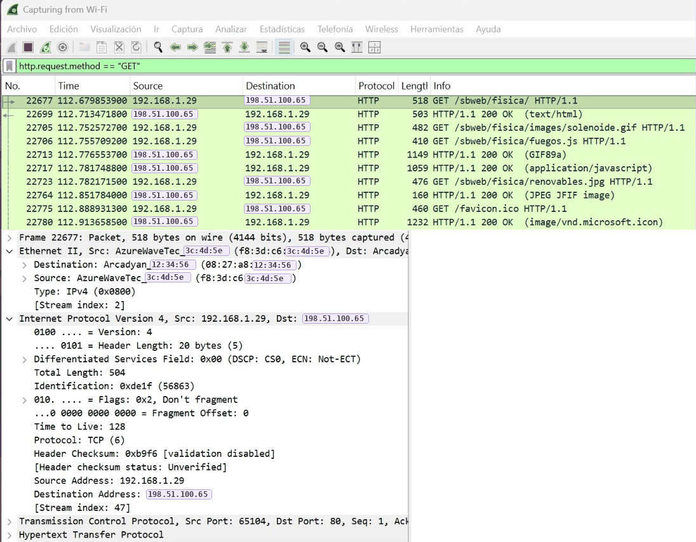
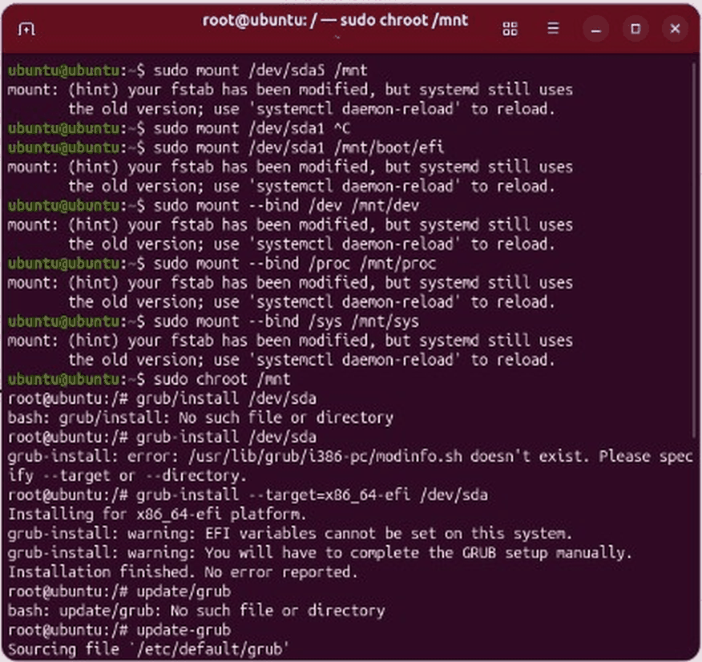
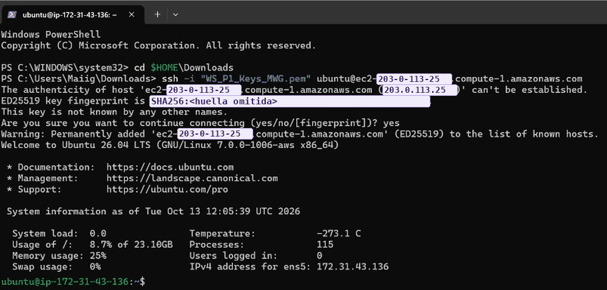
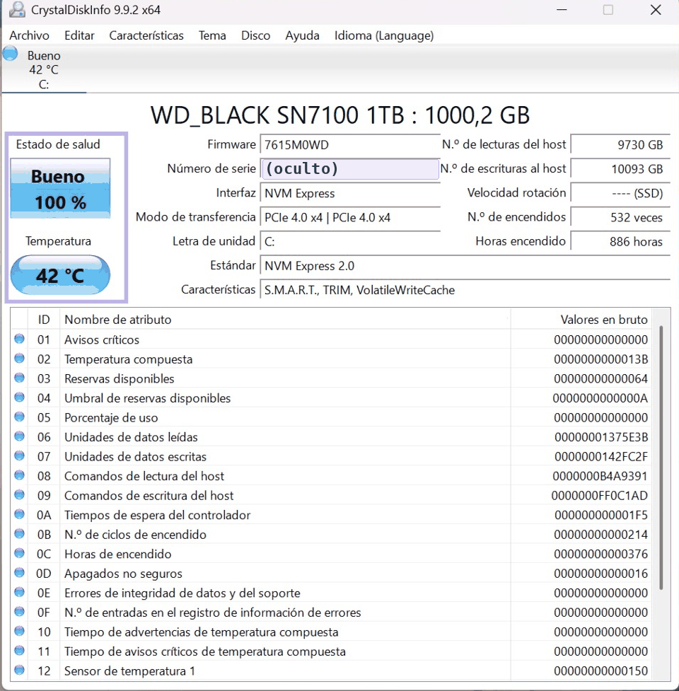

Sistemas
- Windows y Linux
- Active Directory (prácticas de clase)
- Virtualización y dual boot
Hola, soy
Técnica en SMR Estudiante de ASIR Busco prácticas duales
Me interesan la administración de sistemas, las redes y el soporte técnico. Disponible para prácticas duales desde febrero/marzo de 2027.
Soy técnica en Sistemas Microinformáticos y Redes y estudio el primer curso de Administración de Sistemas Informáticos en Red (ASIR) en modalidad dual.
En SMR hice 400 horas de prácticas como técnica de soporte en PC Plasma: formateos, clonación de discos, mantenimiento de equipos, diagnóstico de averías y atención a clientes.
Ahora en ASIR estoy aprendiendo virtualización, análisis de tráfico con Wireshark, protocolos de red y Active Directory. Mi objetivo es seguir creciendo en sistemas y redes y conseguir certificaciones profesionales.
maite@portfolio:~$ whoami
maite willinski
maite@portfolio:~$ cat estudios.txt
SMR · titulada (2022 – 2025)
ASIR · 1.º curso, FP Dual (2026 – actualidad)
maite@portfolio:~$ cat experiencia.txt
Soporte informático · PC Plasma · 400 h
maite@portfolio:~$ cat busco.txt
Prácticas duales · feb/mar 2027 · ~300 h
maite@portfolio:~$ Prácticas de clase documentadas paso a paso, con capturas reales. Cada una tiene su README en GitHub.

Planificación y Administración de Redes · ASIR
Cálculo de subredes y cuellos de botella en una topología de Packet Tracer, y análisis capa a capa de capturas reales de ARP, DNS y HTTP.

Implantación de Sistemas Operativos · ASIR
Windows 11 y Ubuntu en una VM con UEFI y Secure Boot. Borré la partición EFI a propósito y recuperé los dos sistemas desde la línea de comandos.

Implantación de Sistemas Operativos · ASIR
Instancias de Ubuntu Server y Windows Server en la nube, con acceso por SSH y RDP, grupos de seguridad y servidores web nginx e IIS.

Fundamentos de Hardware · ASIR
Revisión de un equipo real: UEFI, salud del SSD con S.M.A.R.T., test de memoria RAM, rendimiento de la CPU y diagnóstico de averías de arranque.
2026 – actualidad
IES Aguadulce · 1.º curso · FP Dual
Octubre – diciembre de 2025
PC Plasma · 400 horas (FCT de SMR)
2022 – 2025
IES Virgen del Carmen
¿Tienes una plaza de prácticas duales en sistemas, redes o soporte? Me encantará hablar contigo.
Écija (Sevilla)